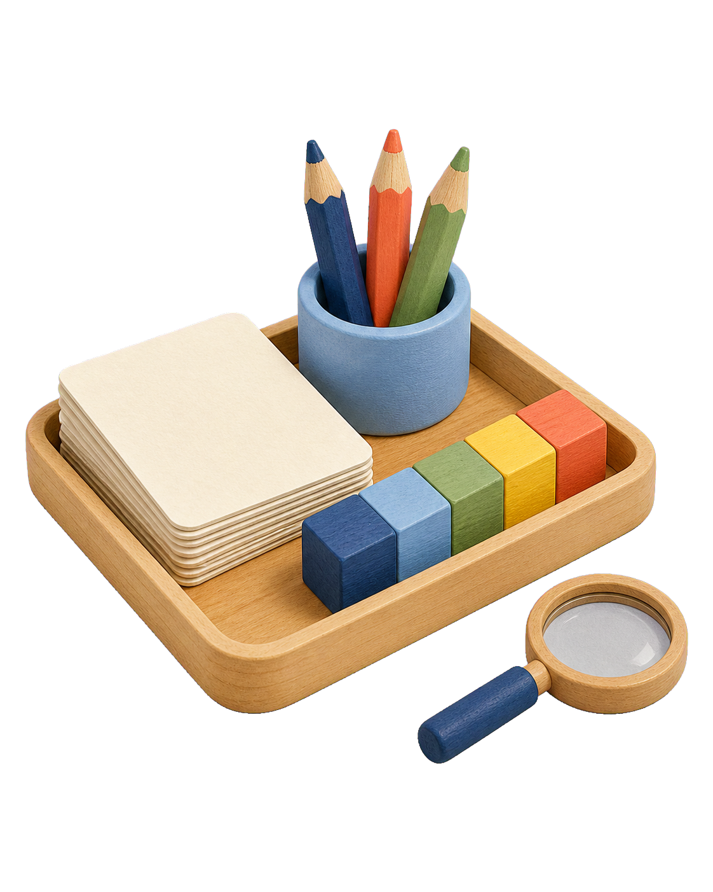

Begin with a question.
Notice what students are trying to understand, then plan an invitation that helps them investigate further.
Gardner classroom practice
A practical, low-resource guide to inquiry, learning centres, collaboration, and visible thinking from Kindergarten through Grade 7.

Start here
A Reggio-inspired classroom treats children as capable researchers. Teachers listen, prepare useful materials, follow meaningful questions, support collaboration, and document how thinking changes.
Gardner is inspired by these principles; it does not attempt to copy the municipal schools of Reggio Emilia. Practice must fit our students, curriculum, community, staffing, spaces, and available resources.
Notice what students are trying to understand, then plan an invitation that helps them investigate further.
Choose objects students can sort, combine, draw, build with, compare, move, name, and reinterpret.
Use pairs and small groups so ideas can be explained, challenged, borrowed, revised, and extended.
Record words, questions, sketches, work samples, and changes in thinking, then use them to plan next steps.
By grade level
Begin with three or four purposeful centres connected to current learning. A centre is not free time: it has a question, useful materials, expected ways of working, and something the teacher is observing.
Keep materials large, durable, visible, and easy to return. Allow repetition. Join play, name actions, record emerging language, and notice how children solve social and physical problems.
Boxes, blocks, lids, tubes, stones, fabric, and animals for building, enclosing, balancing, and storytelling.
ObserveMovement, persistence, spatial ideas, sharing, and invented stories.
Thick pencils, chalk, paint, clay, paper scraps, and safe natural tools for lines, shapes, prints, and symbols.
ObserveGrip, choices, representation, language, and meaning.
Leaves, soil, seed pods, water, shells, sand, spoons, cups, and magnifiers where available.
ObserveSorting, comparison, prediction, care, and descriptive words.
Books, puppets, cloth, baskets, household objects, and familiar community roles.
ObserveConversation, imagination, memory, empathy, and turn-taking.
Children still need choice and movement, while centres begin to carry clearer literacy, numeracy, and inquiry intentions. Invite students to explain, draw, label, count, compare, and revisit.
Bottle tops, beans, sticks, egg cartons, string, number cards, and containers for counting, grouping, patterns, and measurement.
AskHow do you know? Can you show it another way?
Picture sequences, name cards, labels, mini-books, drawing paper, puppets, and familiar objects.
AskWhat is happening? What should we record?
One changing collection linked to inquiry: seeds, tools, fabrics, soil, insects, packaging, or local maps.
AskWhat do you notice? What are you wondering?
Cardboard, tape, string, boxes, blocks, and reused containers with a simple problem to solve together.
AskWhat is your plan? What changed?
Reinforce reading, writing, mathematics, and environmental learning without creating worksheet stations. Students handle materials, discuss strategies, create records, and explain evidence.
Shared texts, sentence strips, word collections, letters, menus, signs, captions, and class-made books.
ProduceA message, label, caption, retelling, or question for a real reader.
Counters, sticks, number lines, containers, dice, measuring tools, shop items, and student-made problems.
ProduceA model, strategy drawing, explanation, or comparison.
Local maps, packaging, transport examples, interviews, objects from home, weather records, and neighbourhood observations.
ProduceA map, model, chart, notice, or illustrated finding.
Drawing, collage, clay, wire, cardboard, and found materials for showing an idea from another subject.
ProduceA second way to communicate understanding.
Students can plan roles, gather evidence, read short sources, test ideas, keep inquiry journals, and present interpretations. Provide structure without deciding every outcome in advance.
Simple fair tests using water, soil, plants, shadows, ramps, weights, paper, or everyday materials.
DocumentQuestion, prediction, observation, result, and next question.
Measure, budget, map, build, compare, and revise a solution using cardboard and reusable materials.
DocumentPlans, calculations, changes, and reasons.
Books, short texts, interviews, dictionaries, student questions, note cards, and class reference charts.
DocumentKey words, facts, viewpoints, and a written or visual synthesis.
A place for groups to assign roles, review documentation, solve disagreements, and plan their next action.
DocumentDecisions, responsibilities, evidence, and reflection.
This is not childish decoration. Learners take greater responsibility for framing questions, managing resources, evaluating sources, revising work, and communicating to an audience.
Books, printed articles, maps, data, interviews, field notes, and source-evaluation prompts.
ExpectClaims supported by evidence and clearly identified sources.
Paper, cardboard, rulers, string, reusable packaging, supervised basic hand tools, and prototypes.
ExpectA design brief, constraints, testing, feedback, and revision.
Student work, texts, images, artefacts, or community problems discussed through a repeated thinking routine.
ExpectListening, evidence, multiple viewpoints, and constructive critique.
Process boards, journals, drafts, captions, diagrams, quotations, and final work for peers or families.
ExpectA visible learning journey, not only a polished final product.
A simple weekly cycle
Documentation is useful only when it changes what the teacher notices, discusses, or plans next. One clipboard and a display sheet are enough to begin.
ObserveRecord a short quotation, question, sketch, strategy, permitted photograph, or work sample.
InterpretAsk what this reveals about knowledge, misconception, interest, collaboration, language, or skill.
RespondAdjust the question, material, grouping, support, challenge, or next invitation.
ReturnShare the record with students so they can remember, disagree, revise, and continue.
Resource library
These external references support staff learning. Open them online and save only what the source licence or terms permit.
The child, hundred languages, environment, documentation, relationships, and family participation.
Official principlesValues of the educational projectProtagonists, group learning, research, documentation, progettazione, and spaces.
African exampleA+ iZinto materials centreA South African example using recycled, discarded, household, and natural loose parts.
A menu of routines for exploring, deepening, and synthesising ideas across grades.
PDF · 3 pagesStudy groups for documentationA protocol for staff to examine student work and decide what learning should happen next.
PDF · local materialsA+ iZinto flyerA compact introduction to creative reuse and loose-parts learning in Southern Africa.
PDF · NamibiaGrade 1 Integrated Planning ManualUse local outcomes and themes as the academic frame for inquiry and centre planning.
ExamplesDocumentation shared with learnersWays to return words, images, work, and questions to students for continued learning.
Routine + printSee, Think, WonderA low-resource routine for close observation, interpretation, curiosity, and evidence.